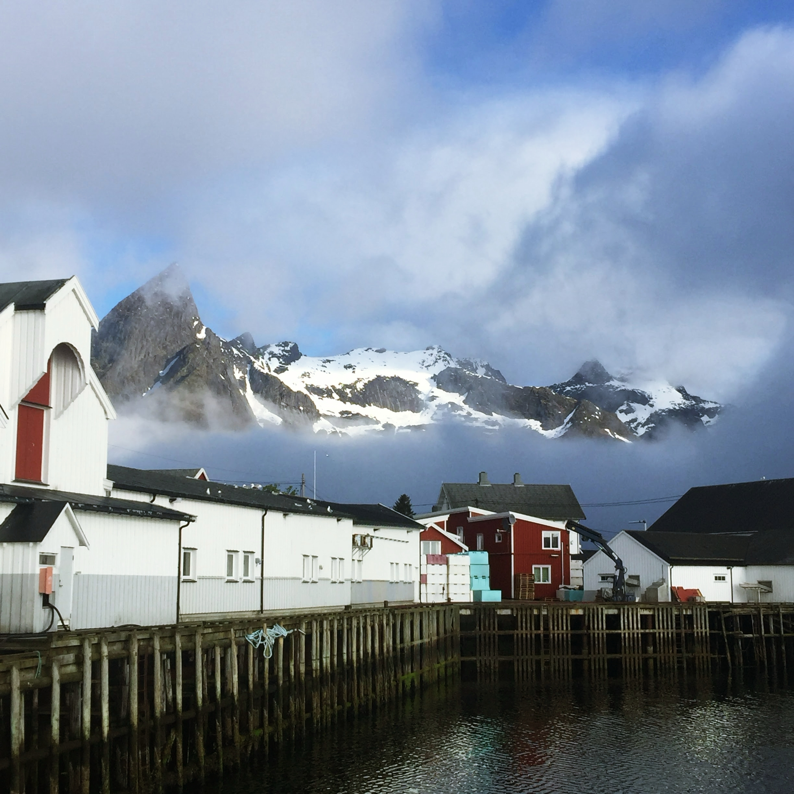
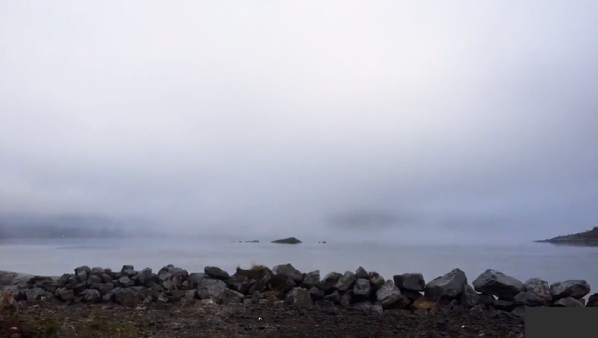
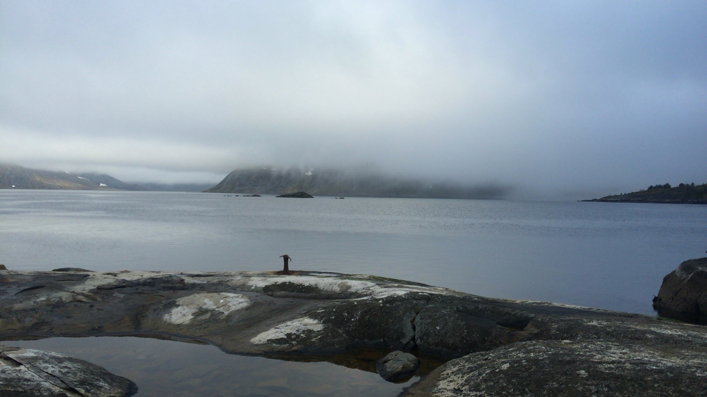
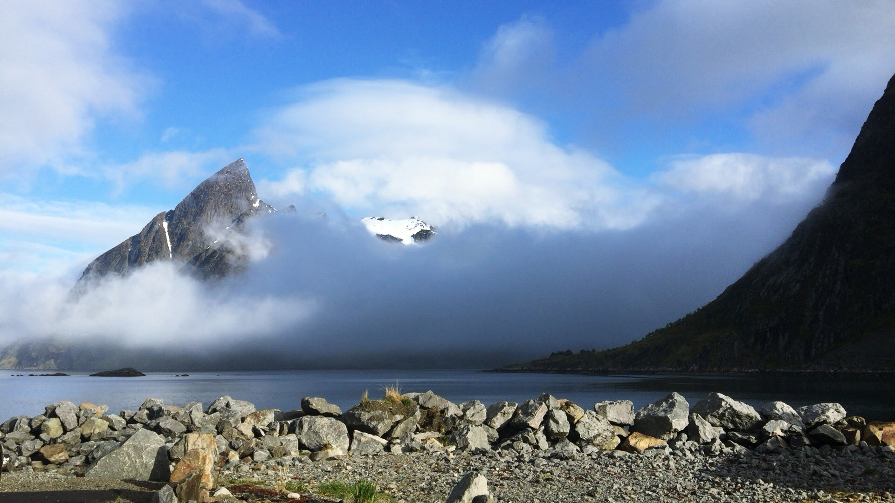

노르웨이 로포텐 제도(Lofoten Islands). 북극권 바로 아래, 피오르드와 바위산이 바다에서 솟아오른 곳입니다.
이곳의 날씨는 예측할 수 없습니다. 맑은 하늘이 순식간에 해무로 덮이고, 방금 전까지 선명하던 산이 흔적도 없이 사라집니다. 그리고 언제 그랬냐는 듯, 다시 드러납니다.


해무가 짙게 내려앉던 날, 산이 사라졌습니다.
분명히 거기 있었습니다. 어제도, 그제도. 그런데 지금 눈앞에는 아무것도 보이지 않습니다.
나는 스스로를 '보이지 않는 세계를 믿는 사람'이라고 생각해 왔는데, 산 하나가 사라지자 믿음의 뿌리가 흔들리는 것을 느꼈습니다.
내가 믿었던 것은 끊임없이 가시적인 것을 공급받아야만 유지되는 믿음이었다는 것을. 나는 내 생각을 믿고 있었던 것입니다.
물고기는 물속에 있어도 물을 볼 수 없습니다. 우리도 마찬가지입니다. 가장 깊은 곳에 있는 것은, 바로 그렇기 때문에 보이지 않습니다.
로포텐의 산은 해무 속에서도 거기 있었습니다. 믿음이란, 보이지 않는 동안에도 그것을 알고 있는 것입니다.
"산은 사라지지 않았습니다.
다만 내 시야가 닿지 않았을 뿐입니다."

해무가 걷히기 전, 산은 거기 있었습니다. 보이지 않았을 뿐.
우리가 아직 가보지 않은 길도 그럴지 모릅니다. 사라진 것이 아니라, 아직 드러나지 않은 것.